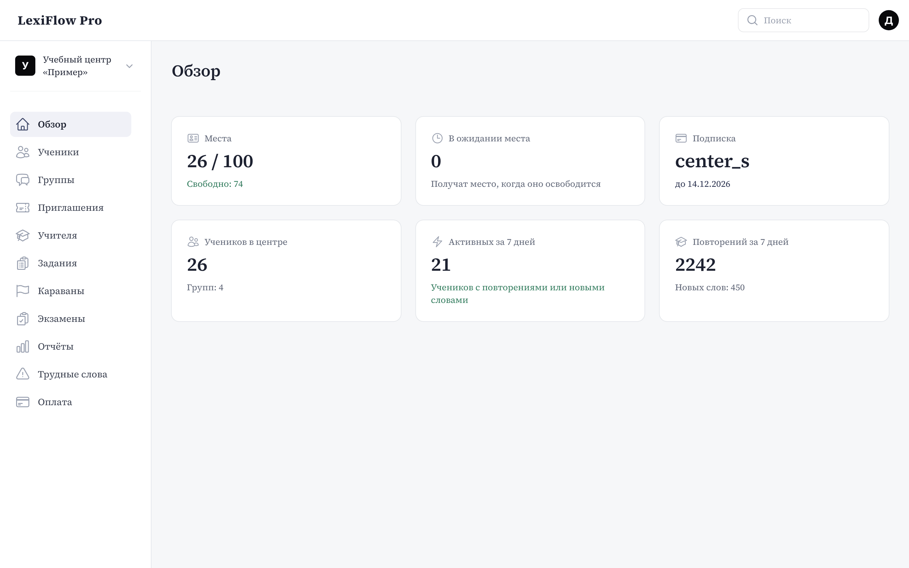
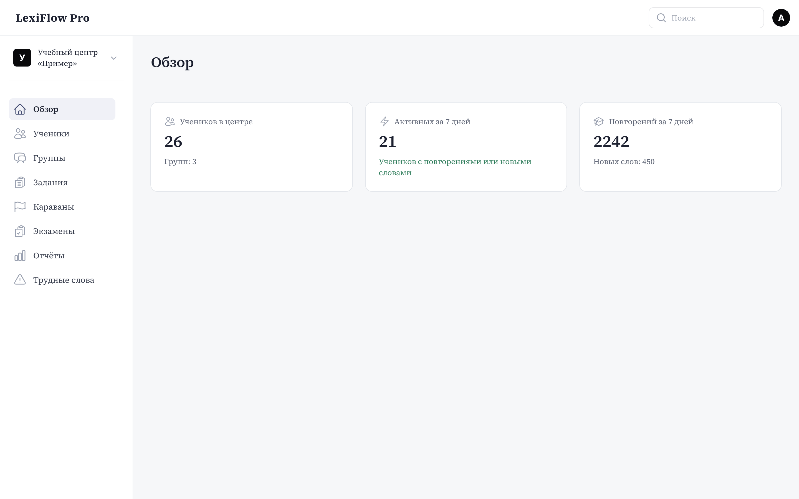

/org)Кабинет — это отдельная панель для учебных центров и репетиторов. Здесь вы привязываете свои Telegram-группы, приглашаете учеников, выдаёте задания, смотрите результаты экзаменов и отчёты, оплачиваете тариф. Ученики в кабинет не заходят: они занимаются в мини-приложении LexiFlow в Telegram.
Адрес кабинета: https://<адрес платформы>/org. Это не панель администратора /admin: у кабинета свой вход, и вы видите только свой центр.

В кабинете две роли. Роль задаётся отдельно в каждом центре: один человек может быть владельцем в одном центре и учителем в другом.
| Роль в кабинете | Кто это обычно | Что делает |
|---|---|---|
| Владелец | руководитель центра, администратор центра, репетитор, который работает один | всё в кабинете: группы, ученики, приглашения, учителя, задания, оплата, настройки центра |
| Учитель | преподаватель центра | работает только со своими группами: задания, караваны, экзамены, отчёты, трудные слова; учеников своих групп только смотрит |
| Раздел меню | Владелец | Учитель |
|---|---|---|
| Обзор | места, очередь, подписка; ученики и активность всего центра; «Первые шаги» | ученики и активность своих групп; «Первые шаги» |
| Ученики | все ученики центра, «Пригласить ученика», «Удалить из центра», блок «Приглашения учеников» | ученики своих групп, только просмотр |
| Группы | все группы; «Привязать группу», «Курс группы», «Отвязать» | свои группы, только просмотр |
| Приглашения (коды) | создать код и ссылку, отключить | раздела нет |
| Учителя | пригласить, назначить группы, сменить роль, отправить приглашение ещё раз, удалить | раздела нет |
| Задания | все группы центра: создать, смотреть, закрыть | свои группы: создать, смотреть, закрыть |
| Караваны | караваны всех групп; запуск и отмена — только в группах, где владелец сам назначен учителем | свои группы: запустить, отменить, смотреть |
| Экзамены | все группы: результаты, CSV | свои группы: результаты, CSV |
| Отчёты | весь центр, CSV | свои группы, CSV |
| Трудные слова | все группы | свои группы |
| Оплата | тариф, места, оплата, счета, история | раздела нет (по прямой ссылке — ошибка 403) |
| Настройки центра (меню центра сверху слева) | название, контакты, часовой пояс, язык | нет |
| Профиль (меню в правом верхнем углу) | имя, email, пароль, Telegram | то же |

Место — это один ученик, который получает Pro за счёт центра. Пока у центра есть действующая подписка, каждый участник центра занимает место, пока места не кончатся. Остальные ждут в очереди в порядке вступления и получают место, как только оно освободится или вы повысите тариф. Ожидающий ученик спокойно занимается на бесплатном тарифе.
| Тариф | Мест | Как оплатить |
|---|---|---|
| Репетитор | 30 | онлайн (Payme, Click) или по счёту |
| Центр S | 100 | онлайн или по счёту |
| Центр M | 300 | онлайн или по счёту |
| Центр L | без лимита | по договорённости, подключает администратор платформы |
Срок оплаты — 1 месяц или 1 год. Цены каждого тарифа кабинет показывает на странице «Оплата» (глава «Оплата и тариф центра»).